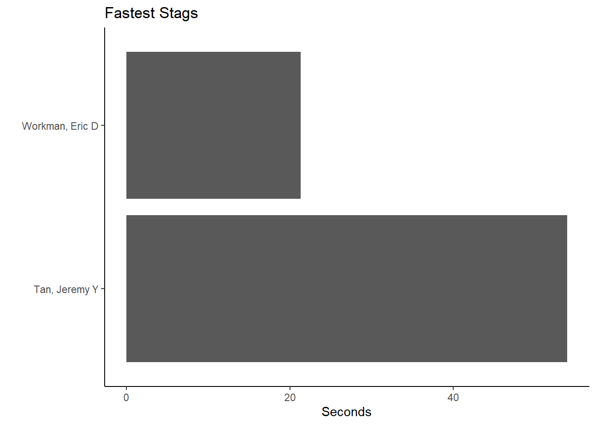

R.utils::sourceDirectory(here::here("src", "functions"))Visualizing amounts
Overview
This module demonstrates some ways to visualize amounts or quantities.
There are a few key concerns for any data presentation. First, you need to determine what data you want to present. Second, you must to determine how the user will use that information presented. For example, will they make comparisons and if so, what kind of comparisons will they make? The more complicated the data presented, the more comparisons can be made of course. Third, you must consider the interaction between the two, in essence how the data visualization may affect the goal the user has in mind. If you intend users to make a particular comparison, you want to present your data in a way that facilitates that process rather than hinder that process.
Amounts could be presented in tabular form for instance when actual values are essential. Amounts could also be presented in visual form as a graphic of some form. Depending on the goals or the use of the data, creating separate plots that facilitate the interpretation process may be most optimal when the bias of the user competes with the aesthetic elements of the visualization (e.g., Gestalt principles).
A sub goal of the module is also to understand how to map variables in a data frame to geoms and corresponding aesthetics using {ggplot2}.
To Do
Watch the associated canvas videos.
Optional Readings
Libraries
- {here}: 1.0.1: for path management
- {dplyr} 1.1.4: for selecting, filtering, and mutating
- {ggplot2}: 3.5.1: for creating data visualization
- {SwimmeR}: 0.14.2: for processing swim meet data
External Functions
Provided in class:
view_html(): for viewing data frames in html format, from /src/functions/view_html.R
Loading Libraries
We will work with a few different libraries for data manipulation. Let’s load them into our work space using library().
library(dplyr)
library(stringr)
library(ggplot2)
library(SwimmeR) # was used to clean timesNote: Make note of any warnings that appear when loading libraries. There are some libraries that contain functions with the same names. Be aware that the most recently loaded library function will take precedence. You can avoid confusion using :: to call a function from a particular library (e.g., libraryname::functionname()).
Loading Data
To examine some associations, we will use some swimming event times which can be accessed from:
https://raw.githubusercontent.com/slicesofdata/dataviz24/main/data/processed/cleaned-2023-cms-invite.csvTo access the data, either read the file directly from the url using read.csv() and assign the data frame a name like SWIM:
read.csv("https://raw.githubusercontent.com/slicesofdata/dataviz24/main/data/processed/cleaned-2023-cms-invite.csv")
Or download it and save to the /data/processed directory and read from there.
SWIM <- read.csv(here::here("data", "processed", "cleaned-2023-cms-invite.csv"))Take a glimpse:
SWIM |>
glimpse() Rows: 201
Columns: 10
$ Year <int> 2023, 2023, 2023, 2023, 2023, 2023, 2023, 2023, 2023, 2023, 2…
$ School <chr> "Pomona-Pitzer-CA", "Claremont-Mudd-Scripps-CA", "Claremont-M…
$ Team <chr> "Mixed", "Mixed", "Mixed", "Mixed", "Mixed", "Mixed", "Mixed"…
$ Relay <chr> "Relay", "Relay", "Relay", "Relay", "Relay", "Relay", "Relay"…
$ Distance <int> 200, 200, 200, 200, 200, 200, 200, 200, 200, 200, 200, 200, 2…
$ Name <chr> NA, NA, NA, NA, NA, NA, NA, NA, NA, NA, NA, NA, NA, NA, NA, "…
$ Age <int> NA, NA, NA, NA, NA, NA, NA, NA, NA, NA, NA, NA, NA, NA, NA, 2…
$ Event <chr> "Medley", "Medley", "Medley", "Medley", "Medley", "Medley", "…
$ Time <dbl> 97.74, 101.34, 101.64, 102.21, 102.83, 102.93, 103.55, 103.63…
$ Split50 <dbl> 26.35, 24.40, 24.06, 24.99, 24.37, 27.46, 28.54, 26.75, 25.77…Group by Event and take a glimpse:
SWIM |>
group_by(Event) |>
glimpse() Rows: 201
Columns: 10
Groups: Event [6]
$ Year <int> 2023, 2023, 2023, 2023, 2023, 2023, 2023, 2023, 2023, 2023, 2…
$ School <chr> "Pomona-Pitzer-CA", "Claremont-Mudd-Scripps-CA", "Claremont-M…
$ Team <chr> "Mixed", "Mixed", "Mixed", "Mixed", "Mixed", "Mixed", "Mixed"…
$ Relay <chr> "Relay", "Relay", "Relay", "Relay", "Relay", "Relay", "Relay"…
$ Distance <int> 200, 200, 200, 200, 200, 200, 200, 200, 200, 200, 200, 200, 2…
$ Name <chr> NA, NA, NA, NA, NA, NA, NA, NA, NA, NA, NA, NA, NA, NA, NA, "…
$ Age <int> NA, NA, NA, NA, NA, NA, NA, NA, NA, NA, NA, NA, NA, NA, NA, 2…
$ Event <chr> "Medley", "Medley", "Medley", "Medley", "Medley", "Medley", "…
$ Time <dbl> 97.74, 101.34, 101.64, 102.21, 102.83, 102.93, 103.55, 103.63…
$ Split50 <dbl> 26.35, 24.40, 24.06, 24.99, 24.37, 27.46, 28.54, 26.75, 25.77…Making some plots
Based on the data, there are all different types of way to plot amounts even when there are limited variables. More complex data frames will offer more possibilities. Nevertheless, we can create plots bars based on a single metric or bars that stack based on multiple metrics, bars that are not stacked, points, etc. Amounts could be based on variables visibly present in the data frame or involve creating new variables or statistical transformations. For example, amounts to be time, counts, percentages, etc.
Plotting Counts
We can take the count of various events in order to plot the amount of something. But what fun would an initial example be if it did not introduce a new function? dplyr::slice() is a function that allows you to index rows so that you can select, remove, or duplicate rows. For more information, see ?slice.
Let’s say we want to plot the number of instances for which an ultimate best occurred in a given year. The data set contains bests for each year rather than best times across history. So for each event, we can figure out which year had the fastest time and count the number of instances per year. Then, using that data frame, we can create a data visualization that communicates the number of all-time-bests across the years.
How many events are in the data?
SWIM |>
pull(Event) |>
length()[1] 201Um, that’s too many events. Let’s get unique() instances.
SWIM |>
pull(Event) |>
unique()[1] "Medley" "Freestyle" "IM" "Butterfly" "Breaststroke"
[6] "Backstroke" OK, so we are dealing with a total number of 6 events for Stag and Athena data. We could also examine the number of events per year but that involves more wrangling, so let’s make the assumption that the number of swim Events is constant. Let’s also assume that the Time variable is cleaned up correctly or the plots will be inaccurate given the data. We will not wrangle here but you should make note of whether everything looks accurate.
Reduce the data frame to contain the bests
We will group the data by Event and slice() the data so that the data frame contains rows that represent the fastest Time per event. The which.min() function will return the row in an Event that contains the lowest value for the variable, Time.
We start with 201 rows.
dim(SWIM)[1] 201 10SWIM |>
group_by(Event) |>
slice(which.min(Time)) # A tibble: 6 × 10
# Groups: Event [6]
Year School Team Relay Distance Name Age Event Time Split50
<int> <chr> <chr> <chr> <int> <chr> <int> <chr> <dbl> <dbl>
1 2023 Claremont-Mudd-Scr… Men Sing… 100 Tan,… 19 Back… 54.0 25.5
2 2023 Pomona-Pitzer-CA Men Sing… 100 Yu, … 20 Brea… 55.2 26.2
3 2023 Pomona-Pitzer-CA Men Sing… 100 Clem… 19 Butt… 49.7 23.2
4 2023 Claremont-Mudd-Scr… Men Sing… 50 Work… 20 Free… 21.3 NA
5 2023 Pomona-Pitzer-CA Men Sing… 200 Pan,… 21 IM 112. 23.8
6 2023 Pomona-Pitzer-CA Mixed Relay 200 <NA> NA Medl… 97.7 26.4Let’s assign the new data frame to an object:
FAST_BY_EVENT <- SWIM |>
group_by(Event, School) |>
slice(which.min(Time))
FAST_BY_EVENT |>
glimpse()Rows: 12
Columns: 10
Groups: Event, School [12]
$ Year <int> 2023, 2023, 2023, 2023, 2023, 2023, 2023, 2023, 2023, 2023, 2…
$ School <chr> "Claremont-Mudd-Scripps-CA", "Pomona-Pitzer-CA", "Claremont-M…
$ Team <chr> "Men", "Men", "Men", "Men", "Men", "Men", "Men", "Men", "Men"…
$ Relay <chr> "Single", "Single", "Single", "Single", "Single", "Single", "…
$ Distance <int> 100, 100, 100, 100, 100, 100, 50, 50, 200, 200, 200, 200
$ Name <chr> "Tan, Jeremy Y", "Harandi, Matteen J", "Smith, Ben J", "Yu, L…
$ Age <int> 19, 19, 20, 20, 20, 19, 20, 18, 18, 21, NA, NA
$ Event <chr> "Backstroke", "Backstroke", "Breaststroke", "Breaststroke", "…
$ Time <dbl> 53.95, 56.40, 58.93, 55.17, 51.09, 49.66, 21.34, 21.64, 115.0…
$ Split50 <dbl> 25.48, 27.08, 27.59, 26.15, 23.80, 23.19, NA, NA, 25.26, 23.8…We now have a data frame containing 12 rows.
Data in Tabular Form
There are many ways to present tabular data. {htmlTable} and {knitr} as well as other make this easy. For now, we will pass the data frame to htmlTable::htmlTable().
FAST_BY_EVENT |>
knitr::kable() | Year | School | Team | Relay | Distance | Name | Age | Event | Time | Split50 |
|---|---|---|---|---|---|---|---|---|---|
| 2023 | Claremont-Mudd-Scripps-CA | Men | Single | 100 | Tan, Jeremy Y | 19 | Backstroke | 53.95 | 25.48 |
| 2023 | Pomona-Pitzer-CA | Men | Single | 100 | Harandi, Matteen J | 19 | Backstroke | 56.40 | 27.08 |
| 2023 | Claremont-Mudd-Scripps-CA | Men | Single | 100 | Smith, Ben J | 20 | Breaststroke | 58.93 | 27.59 |
| 2023 | Pomona-Pitzer-CA | Men | Single | 100 | Yu, Larry | 20 | Breaststroke | 55.17 | 26.15 |
| 2023 | Claremont-Mudd-Scripps-CA | Men | Single | 100 | Smith, Ben J | 20 | Butterfly | 51.09 | 23.80 |
| 2023 | Pomona-Pitzer-CA | Men | Single | 100 | Clement, Adrian W | 19 | Butterfly | 49.66 | 23.19 |
| 2023 | Claremont-Mudd-Scripps-CA | Men | Single | 50 | Workman, Eric D | 20 | Freestyle | 21.34 | NA |
| 2023 | Pomona-Pitzer-CA | Men | Single | 50 | Raybukh, Lenny | 18 | Freestyle | 21.64 | NA |
| 2023 | Claremont-Mudd-Scripps-CA | Men | Single | 200 | Tran, Steven | 18 | IM | 115.00 | 25.26 |
| 2023 | Pomona-Pitzer-CA | Men | Single | 200 | Pan, Isaac S | 21 | IM | 112.33 | 23.84 |
| 2023 | Claremont-Mudd-Scripps-CA | Mixed | Relay | 200 | NA | NA | Medley | 101.34 | 24.40 |
| 2023 | Pomona-Pitzer-CA | Mixed | Relay | 200 | NA | NA | Medley | 97.74 | 26.35 |
Selecting only the Event and the Team:
FAST_BY_EVENT |>
select(Event, Team) |>
knitr::kable() # or htmlTable::htmlTable()Adding missing grouping variables: `School`| School | Event | Team |
|---|---|---|
| Claremont-Mudd-Scripps-CA | Backstroke | Men |
| Pomona-Pitzer-CA | Backstroke | Men |
| Claremont-Mudd-Scripps-CA | Breaststroke | Men |
| Pomona-Pitzer-CA | Breaststroke | Men |
| Claremont-Mudd-Scripps-CA | Butterfly | Men |
| Pomona-Pitzer-CA | Butterfly | Men |
| Claremont-Mudd-Scripps-CA | Freestyle | Men |
| Pomona-Pitzer-CA | Freestyle | Men |
| Claremont-Mudd-Scripps-CA | IM | Men |
| Pomona-Pitzer-CA | IM | Men |
| Claremont-Mudd-Scripps-CA | Medley | Mixed |
| Pomona-Pitzer-CA | Medley | Mixed |
Selecting only the Event and the Name:
FAST_BY_EVENT |>
select(Event, Name) |>
knitr::kable() # or htmlTable::htmlTable()Adding missing grouping variables: `School`| School | Event | Name |
|---|---|---|
| Claremont-Mudd-Scripps-CA | Backstroke | Tan, Jeremy Y |
| Pomona-Pitzer-CA | Backstroke | Harandi, Matteen J |
| Claremont-Mudd-Scripps-CA | Breaststroke | Smith, Ben J |
| Pomona-Pitzer-CA | Breaststroke | Yu, Larry |
| Claremont-Mudd-Scripps-CA | Butterfly | Smith, Ben J |
| Pomona-Pitzer-CA | Butterfly | Clement, Adrian W |
| Claremont-Mudd-Scripps-CA | Freestyle | Workman, Eric D |
| Pomona-Pitzer-CA | Freestyle | Raybukh, Lenny |
| Claremont-Mudd-Scripps-CA | IM | Tran, Steven |
| Pomona-Pitzer-CA | IM | Pan, Isaac S |
| Claremont-Mudd-Scripps-CA | Medley | NA |
| Pomona-Pitzer-CA | Medley | NA |
The tables show the best Year and the best athlete per event.
Bar Charts
Perhaps a table is not what you want. Perhaps you want to present data as bars. There are two types of bar chart geometry functions: geom_bar() and geom_col(). geom_bar() takes either an x or a y (not both) and produces a plot for which the height of the bar is proportional to the count/frequency of cases in the vector. By contrast, geom_col() takes both an x and a y and plots the height of each x variable bar relative to the value of the y variable. If you want the heights of the bars to represent values in the data (e.g., “identity”), use geom_col().
geom_bar()
geom_bar(
mapping = NULL,
data = NULL,
stat = "count",
position = "stack",
...,
just = 0.5,
width = NULL,
na.rm = FALSE,
orientation = NA,
show.legend = NA,
inherit.aes = TRUE
)Trying out geom_bar(), we need an either an x or a y aesthetic mapping but not both. When passing a variable to x, the bar will be vertical and when passing the variable to y, the bar will be horizontal. Because the mapping is inherited from ggplot() if specified there, you will throw an error like the following because both x and y will be inherited.
Using |>, we will pass the data frame to ggplot():
SWIM |>
ggplot(mapping = aes(x = Year, y = Time)) +
geom_bar()Error in f(): ! stat_count() can only have an x or y aesthetic.We can change the mapping in the base ggplot() layer, which will plot bars corresponding to the unique levels of the variable passed to x at a height relative to the frequency of occurrence of those unique levels.
Checking ?geom_bar, you will notice that geom_bar() has a default stat = "count". This means that the default bar plot will plot the “count”, or frequency, of elements in a vector variable. When the count or frequency of a value is 1, the bar height will be 1 on the y axis and if an element appears 5 times in the vector, the bar height will be 5. For a horizontal bar, the bar length, rather than height, will be 5. Looking at FAST_BY_EVENT$Age, you will see different ages. Based on the previous discussion, what might you expect the bar to look like? Answer before seeing the plot or explain why after seeing the plot.
Let’s pass a variable to x:
FAST_BY_EVENT |>
ggplot(mapping = aes(x = Age)) +
geom_bar()Warning: Removed 2 rows containing non-finite outside the scale range
(`stat_count()`).You will notice that the y-axis variable in the plot is count. This variable is not in the data frame. {ggplot} calculated the count as the default behavior of geom_bar() using the stat_*() function associated with geom_bar(), with is stat_count(). That is where the count comes from. If you pass stat = "count", you will get the same plot because this is the default behavior calling stat_count().
FAST_BY_EVENT |>
ggplot(mapping = aes(x = Age)) +
geom_bar()Warning: Removed 2 rows containing non-finite outside the scale range
(`stat_count()`).
Makes sense.
Mapping Team:
FAST_BY_EVENT |>
ggplot(mapping = aes(x = Team)) +
geom_bar()Makes sense.
Let’s map a variable to y:
Start with Team:
FAST_BY_EVENT |>
ggplot(mapping = aes(y = Team)) +
geom_bar()Now Age:
FAST_BY_EVENT |>
ggplot(mapping = aes(y = Age)) +
geom_bar()Warning: Removed 2 rows containing non-finite outside the scale range
(`stat_count()`).Mapping for an x and a y like this will fail. Try for yourself.
FAST_BY_EVENT |>
ggplot(mapping = aes(x = Age, y = School)) +
geom_bar()IMPORTANT: Becuase geom_bar() inherits both x and y from ggplot(), you will want the heights of the bars to represent values in the data (e.g., their "identity" as shown in the data frame), use geom_bar() and pass stat = "identity"). You should see the same plot as shown with passing only x = Year except for the inclusion of Team information.
FAST_BY_EVENT |>
ggplot(mapping = aes(x = Age, y = School)) +
geom_bar(stat = "identity")Warning: Removed 2 rows containing missing values or values outside the scale range
(`geom_bar()`).This plot is ugly. We will work on fixing this later but or now understand that geom_bar() and geom_col() differ in how they process data but they both can be used to create the same plot.
geom_col()
Remember that geom_col() takes both an x and a y and plots the height of each x variable bar relative to the value of the y variable. The default position behavior also position = "stack" when another another variable is mapped to another aesthetic.
geom_col(
mapping = NULL,
data = NULL,
position = "stack",
...,
just = 0.5,
width = NULL,
na.rm = FALSE,
show.legend = NA,
inherit.aes = TRUE
)Mapping only x and y:
FAST_BY_EVENT |>
ggplot(mapping = aes(x = Name, y = Time)) +
geom_col()Switching x and y:
FAST_BY_EVENT |>
ggplot(mapping = aes(x = Time, y = Name)) +
geom_col()
Adding Layers
We can take a plot object and add layers that will override defaults. Let’s assign the plot to an object to make adding some layers easier, though not necessary.
(fast_by_event_col <- FAST_BY_EVENT |>
ggplot(mapping = aes(x = Name, y = Time)) +
geom_col()
)
Add a coord_*() layer, specifically coord_flip() to flip the coordinates. Take object, and add layer using +:
fast_by_event_col +
coord_flip()Add a theme() layer:
fast_by_event_col +
coord_flip() +
theme_minimal() Add label layers:
fast_by_event_col +
coord_flip() +
theme_minimal() +
xlab(" ") +
ylab("Seconds")Dot Plot/Point Plot
You can also plot amounts as points. We will add an aesthetic here to color code the points by Team.
(fast_by_event_point <- FAST_BY_EVENT |>
ggplot(mapping = aes(x = Name, y = Time)) +
geom_point(aes(color = Team)) +
coord_flip() +
theme_classic() +
xlab(" ") +
ylab("Seconds")
)Sub-setting for Separate Plots
Let’s create a data summary for Teams and Events. just do this for each each team by changing the data frame. There are other ways to address this problem but we will cover those topics later.
SWIM |>
group_by(Team, Event) |>
slice(which.min(Time)) # A tibble: 12 × 10
# Groups: Team, Event [12]
Year School Team Relay Distance Name Age Event Time Split50
<int> <chr> <chr> <chr> <int> <chr> <int> <chr> <dbl> <dbl>
1 2023 Claremont-Mudd-Sc… Men Sing… 100 Tan,… 19 Back… 54.0 25.5
2 2023 Pomona-Pitzer-CA Men Sing… 100 Yu, … 20 Brea… 55.2 26.2
3 2023 Pomona-Pitzer-CA Men Sing… 100 Clem… 19 Butt… 49.7 23.2
4 2023 Claremont-Mudd-Sc… Men Sing… 50 Work… 20 Free… 21.3 NA
5 2023 Pomona-Pitzer-CA Men Sing… 200 Pan,… 21 IM 112. 23.8
6 2023 Pomona-Pitzer-CA Mixed Relay 200 <NA> NA Free… 88.1 23.9
7 2023 Pomona-Pitzer-CA Mixed Relay 200 <NA> NA Medl… 97.7 26.4
8 2023 Claremont-Mudd-Sc… Women Sing… 100 Towe… 20 Back… 62.8 30.3
9 2023 Pomona-Pitzer-CA Women Sing… 100 Gill… 22 Brea… 62.4 29.7
10 2023 Claremont-Mudd-Sc… Women Sing… 100 Shar… 19 Butt… 57.3 26.7
11 2023 Pomona-Pitzer-CA Women Sing… 50 Wang… 18 Free… 24.2 NA
12 2023 Pomona-Pitzer-CA Women Sing… 200 Jone… 19 IM 128. 27.9Let’s assign this to an object so that we can use the grouping data in a plot layer. You might also write this out as an .Rds file if such a data frame is used for a variately of plots.
FAST_BY_EVENT_TEAM <- SWIM |>
group_by(Team, Event) |>
slice(which.min(Time)) Take the grouped data frame and filter by Team and School and create a geom_col().
For Team == "Men" and School == "Claremont-Mudd-Scripps-CA":
(fast_be_event_team_col_men <-
FAST_BY_EVENT_TEAM |>
filter(Team == "Men",
School == "Claremont-Mudd-Scripps-CA"
) |>
ggplot(mapping = aes(x = Name, y = Time)) +
geom_col() +
coord_flip() +
theme_classic() +
xlab(" ") +
ylab("Seconds") +
ggtitle("Fastest Stags")
)
And for Team == "Women" and School == "Claremont-Mudd-Scripps-CA":
(fast_be_event_team_col_women <-
FAST_BY_EVENT_TEAM |>
filter(Team == "Women",
School == "Claremont-Mudd-Scripps-CA"
) |>
filter(Team == "Women") |>
ggplot(mapping = aes(x = Name, y = Time)) +
geom_col() +
coord_flip() +
theme_classic() +
xlab(" ") +
ylab("Seconds") +
ggtitle("Fastest Athenas")
)Notice what happens if you plotted Event along with with Name:
(fast_be_event_team_col_women <-
FAST_BY_EVENT_TEAM |>
filter(Team == "Women",
School == "Claremont-Mudd-Scripps-CA"
) |>
filter(Team == "Women") |>
ggplot(mapping = aes(x = Event, y = Name)) +
geom_col() +
coord_flip() +
theme_classic() +
xlab(" ") +
ylab("Seconds") +
ggtitle("Fastest Athenas")
)This probably looks different from your expectation. Although names and events are in the plot, the plot seems nonsensical. The function is working as it was designed because the default positioning behavior of geom_col() is position = "identity". What you see is what you get. Indeed the fastest backstroke butterfly athletes are represented in the plot.
Getting Counts by Summary
Let’s use {dplyr} to help us obtain subgroups.
COUNT_BY_SCHOOL <-
SWIM |>
group_by(Event) |> # group by event
slice(which.min(Time)) |> # get fastest times per event
group_by(School) |> # group by school
summarize(Count = dplyr::n()) # get the row count for each schoolLook at the data frame head.
head(COUNT_BY_SCHOOL)# A tibble: 2 × 2
School Count
<chr> <int>
1 Claremont-Mudd-Scripps-CA 2
2 Pomona-Pitzer-CA 4Using geom_bar(stat = "identity") we will plot the actual counts in the data set as you see them WYSIWYG. Remember, geom_bar() will not allow an x and a y mapping, so we need this argument.
Using geom_col():
COUNT_BY_SCHOOL |>
ggplot(mapping = aes(y = School, x = Count)) +
geom_col() +
coord_flip()Using geom_bar() along with stat = "identity":
COUNT_BY_SCHOOL |>
ggplot(mapping = aes(y = School, x = Count)) +
geom_bar(stat = "identity") +
coord_flip()
Lollipop Plot
A lollipop plot is like a bar plot but has less ink information. It will encode the point position as height.
In order to see the variables in the data frame, let’s create it and then assign it to an object first.
DAT <- SWIM |>
group_by(Event) |>
slice(which.min(Time)) |>
group_by(School) |>
summarize(Count = dplyr::n()) |>
arrange(desc(Count)) We can use geom_segment() to create a line segment from a starting x and y position to an ending x and y position. We can add a geom_point() layer and also flip the coordinates if you want horizontal lines.
DAT |>
ggplot(mapping = aes(x = School, y = Count)) +
geom_segment(mapping = aes(x = School,
xend = School,
y = 0,
yend = Count)
) +
geom_point(size = 4,
col = "black") +
coord_flip()Summary
This module was used to help demonstrate a subset of ways to visualize amounts using ggplot()* objects. The examples represent only subset of different plots one could create to communicate amounts visually. In addition, the rendered plots certainly have problems and fixing those problems will be goals of future modules.
Session Information
sessioninfo::session_info()─ Session info ───────────────────────────────────────────────────────────────
setting value
version R version 4.4.1 (2024-06-14 ucrt)
os Windows 11 x64 (build 22631)
system x86_64, mingw32
ui RTerm
language (EN)
collate English_United States.utf8
ctype English_United States.utf8
tz America/Los_Angeles
date 2024-09-29
pandoc 3.1.5 @ C:/PROGRA~1/Pandoc/ (via rmarkdown)
─ Packages ───────────────────────────────────────────────────────────────────
package * version date (UTC) lib source
askpass 1.2.0 2023-09-03 [1] CRAN (R 4.4.1)
bit 4.0.5 2022-11-15 [1] CRAN (R 4.4.1)
bit64 4.0.5 2020-08-30 [1] CRAN (R 4.4.1)
chromote 0.2.0 2024-02-12 [1] CRAN (R 4.4.1)
cli 3.6.3 2024-06-21 [1] CRAN (R 4.4.1)
colorspace 2.1-0 2023-01-23 [1] CRAN (R 4.4.1)
crayon 1.5.3 2024-06-20 [1] CRAN (R 4.4.1)
digest 0.6.36 2024-06-23 [1] CRAN (R 4.4.1)
dplyr * 1.1.4 2023-11-17 [1] CRAN (R 4.4.1)
DT * 0.33 2024-04-04 [1] CRAN (R 4.4.1)
evaluate 0.24.0 2024-06-10 [1] CRAN (R 4.4.1)
fansi 1.0.6 2023-12-08 [1] CRAN (R 4.4.1)
farver 2.1.2 2024-05-13 [1] CRAN (R 4.4.1)
fastmap 1.2.0 2024-05-15 [1] CRAN (R 4.4.1)
forcats * 1.0.0 2023-01-29 [1] CRAN (R 4.4.1)
generics 0.1.3 2022-07-05 [1] CRAN (R 4.4.1)
ggplot2 * 3.5.1 2024-04-23 [1] CRAN (R 4.4.1)
glue 1.7.0 2024-01-09 [1] CRAN (R 4.4.1)
gtable 0.3.5 2024-04-22 [1] CRAN (R 4.4.1)
here 1.0.1 2020-12-13 [1] CRAN (R 4.4.1)
hms 1.1.3 2023-03-21 [1] CRAN (R 4.4.1)
htmltools * 0.5.8.1 2024-04-04 [1] CRAN (R 4.4.1)
htmlwidgets 1.6.4 2023-12-06 [1] CRAN (R 4.4.1)
httr 1.4.7 2023-08-15 [1] CRAN (R 4.4.1)
jsonlite 1.8.8 2023-12-04 [1] CRAN (R 4.4.1)
knitr 1.47 2024-05-29 [1] CRAN (R 4.4.1)
labeling 0.4.3 2023-08-29 [1] CRAN (R 4.4.0)
later 1.3.2 2023-12-06 [1] CRAN (R 4.4.1)
lifecycle 1.0.4 2023-11-07 [1] CRAN (R 4.4.1)
lubridate * 1.9.3 2023-09-27 [1] CRAN (R 4.4.1)
magrittr 2.0.3 2022-03-30 [1] CRAN (R 4.4.1)
munsell 0.5.1 2024-04-01 [1] CRAN (R 4.4.1)
pdftools 3.4.0 2023-09-25 [1] CRAN (R 4.4.1)
pillar 1.9.0 2023-03-22 [1] CRAN (R 4.4.1)
pkgconfig 2.0.3 2019-09-22 [1] CRAN (R 4.4.1)
processx 3.8.4 2024-03-16 [1] CRAN (R 4.4.1)
promises 1.3.0 2024-04-05 [1] CRAN (R 4.4.1)
ps 1.7.7 2024-07-02 [1] CRAN (R 4.4.1)
purrr * 1.0.2 2023-08-10 [1] CRAN (R 4.4.1)
qpdf 1.3.3 2024-03-25 [1] CRAN (R 4.4.1)
R.methodsS3 1.8.2 2022-06-13 [1] CRAN (R 4.4.0)
R.oo 1.26.0 2024-01-24 [1] CRAN (R 4.4.0)
R.utils 2.12.3 2023-11-18 [1] CRAN (R 4.4.1)
R6 2.5.1 2021-08-19 [1] CRAN (R 4.4.1)
Rcpp 1.0.12 2024-01-09 [1] CRAN (R 4.4.1)
readr * 2.1.5 2024-01-10 [1] CRAN (R 4.4.1)
rlang 1.1.4 2024-06-04 [1] CRAN (R 4.4.1)
rmarkdown 2.27 2024-05-17 [1] CRAN (R 4.4.1)
rprojroot 2.0.4 2023-11-05 [1] CRAN (R 4.4.1)
rstudioapi 0.16.0 2024-03-24 [1] CRAN (R 4.4.1)
rvest 1.0.4 2024-02-12 [1] CRAN (R 4.4.1)
scales 1.3.0 2023-11-28 [1] CRAN (R 4.4.1)
sessioninfo 1.2.2 2021-12-06 [1] CRAN (R 4.4.1)
stringi 1.8.4 2024-05-06 [1] CRAN (R 4.4.0)
stringr * 1.5.1 2023-11-14 [1] CRAN (R 4.4.1)
SwimmeR * 0.14.2 2023-03-24 [1] CRAN (R 4.4.1)
tibble * 3.2.1 2023-03-20 [1] CRAN (R 4.4.1)
tidyr * 1.3.1 2024-01-24 [1] CRAN (R 4.4.1)
tidyselect 1.2.1 2024-03-11 [1] CRAN (R 4.4.1)
tidyverse * 2.0.0 2023-02-22 [1] CRAN (R 4.4.1)
timechange 0.3.0 2024-01-18 [1] CRAN (R 4.4.1)
tzdb 0.4.0 2023-05-12 [1] CRAN (R 4.4.1)
utf8 1.2.4 2023-10-22 [1] CRAN (R 4.4.1)
vctrs 0.6.5 2023-12-01 [1] CRAN (R 4.4.1)
vroom * 1.6.5 2023-12-05 [1] CRAN (R 4.4.1)
websocket 1.4.1 2021-08-18 [1] CRAN (R 4.4.1)
withr 3.0.1 2024-07-31 [1] CRAN (R 4.4.1)
xfun 0.45 2024-06-16 [1] CRAN (R 4.4.1)
xml2 1.3.6 2023-12-04 [1] CRAN (R 4.4.1)
yaml 2.3.10 2024-07-26 [1] CRAN (R 4.4.1)
[1] C:/Users/gcook/_portable_apps/R/R-4.4.1/library
──────────────────────────────────────────────────────────────────────────────